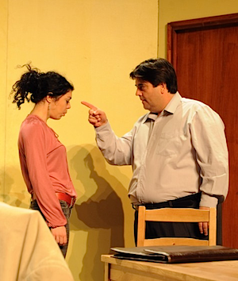

Lijstjes: 2010-05
vrijdag 4 juni 2010
Bijsluiter: 0 (horror!), * (slecht), ** (gewoontjes), *** (goed), **** (uitzonderlijk!)
Muziek (klassiek)
- Haydn: Quatuors à Cordes (Quatuor Ebène) / 2005 / ***(*)
Niet de doorbraak van het Franse Ebène Quartet (dat was dit prijsbeest), maar deze is minstens even goed. Tot in de puntjes afgewerkte en bestudeerde uitvoeringen. En van dat energieke op. 33 gaat iedereen toch glimlachen? (iTunes) - Mozart: Complete Piano Sonatas (Glenn Gould) / 1994 / **(*)
Ik moest dringend mijn kennis van deze pianowerken van Mozart opfrissen. Deze verzameldoos van de beruchte Glenn Gould leek me aantrekkelijk omdat ie volledig is. Maar wees gewaarschuwd: zijn uitvoeringen wijken vaak af van ‘de norm’. Luister bijvoorbeeld eens naar het alom bekende Rondo Alla Turca: die speelt Gould véél trager. De opnamekwaliteit is allesbehalve fameus. (iTunes) - Brahms: Vergangen ist mir Gluck und Heil e.a. (Dietrich Fischer-Dieskau) / 2006 / ****
Voorlopig heb ik enkel dit ene lied van de driedelige verzamelbox. Het zorgde die ochtend echter voor drie minuten kippenvel in de auto. Bedankt Klara, alweer. (Amazon.co.uk) - Couperin: Pièces de Clavecin (Pierre Hantaï) / 2007 / **(*)
Couperin, de (Franse) God van het clavecimbel. Hier uitgevoerd door Pierre Hantaï, voor wie ik sinds zijn drie Scarlatti-cd’s een kinderlijke verering koester. Volgende maand ga ik op jacht naar meer Couperin, als ik de tijd vind. (iTunes)
Muziek (niet-klassiek)
- Gesualdo Variations (David Chevallier, Ensemble a Sei Voci) / 2010 / ***
Fusion? With my reputation? Ik heb twee keer moeten nadenken voor ik overging tot de aankoop. Ik ben een groot bewonderaar van Gesualdo en de slaagkansen van een fusionproject met jazz leken me onwaarschijnlijk laag. Maar ik geef toe: hier en daar lijkt het wel te vlotten, maar op andere momenten raak ik dan weer de draad kwijt. Half overtuigd dus. Wie zich wil verdiepen in Gesualdo, kan beter beide cd’s van La Venexiana aanschaffen. (via — iTunes) - Dead Man OST (Neil Young) / 1996 / ****
Een bizarre ‘postmoderne’ Western met Johnny Depp in de hoofdrol. Een unieke film met een unieke score door Neil Young. Dikke aanraders. (iTunes) - Timber Timbre (Timber Timbre) / 2009 / ****
Een ontdekking van formaat uit de Amerikaanse serie Breaking Bad. Toen ik het hoorde, had ik onmiddellijk door dat er iets bijzonders aan de gang was. De nummers bezitten de schijnbare eenvoud van all time classics en worden opgebouwd met schaarse, maar originele instrumenten. Totaal onbekend in Europa. Ten onrechte. (Amazon.co.uk) - Cedar Shakes (Timber Timbre) / 2006 / **(*)
Debuut van de groep. Aangenaam! (iTunes) - Medicinals (Timber Timbre) / 2007 / ***
Hun tweede schijf: van hetzelfde laken een broek. Eveneens aangenaam, maar voor eeuwig in de schaduw van hun volgende album. (iTunes) - Shutter Island OST (Various Artists) / 2010 / ***
Sterke prent met een gewaagde score. Featuring zware jongens zoals Scelsi en Ligeti. Mijn complimenten aan Hollywood. (iTunes) - Who is that Noise (Housemeister) e.a. / 2009 / **
Een decennium na mijn glorieperiode (ahem) als technodj, heb ik me nog eens aan een technoplaat bezondigd (naar aanleiding van Jasper Wentzel in de Kinky Star op 1 mei met o.a. ook tracks van Cabaret Voltaire en Surf Solar). Plezant hoor, maar het probleem is: na drie keer ben je het zo beu als koude pap. Never again dus. (iTunes)
Boeken
- De Mensheid Zij Geprezen (Arnon Grunberg) / Athenaeum-Polak & Van Gennep/ 2001 / ***
Die Grunberg kan een mens onderuit halen, zoveel is duidelijk. Even spitsvondige als donkere humor, vaak confronterend en helaas meestal waar. Een toilet- dito nachtkastaanrader, goed voor onliners om eender welke gezellige situatie naar de haaien te helpen. (Bol.com) - Honger (Knut Hamsun) / Atlas / 2002 / ?
Drie weken heb ik over dit belachelijk dunne boekje gedaan. Dat had niets met het boek zelf te maken, maar alles met mijn verslaving aan een idioot iPhone spelletje (zie verder). Ik denk dat ik het beter nog eens herlees. Zie later dus. (Bol.com)
Concerten
- Keller Quartet / 21-05-2010 / Miryzaal, Gent / ***(*)
Boem! De meest nauwkeurige uitvoeringen van de twee strijkkwartetten van Ligeti dit seizoen. Hier en daar miste ik enkel nog een beetje punch en volume (‘die jonge gasten, eh!’). Beethoven’s Große Fuge alsook zijn laatste strijkkwartet vond ik dan weer beter bij de Danels (die echter niets bakten van Ligeti). (De Bijloke) - Ellen Comhaire / 19-05-2010 / Café De Loge, Gent / ***
Verrast door het muzikaal talent van mijn ex-reisgenote en lichtjes zotte (op een goede manier) madam. Samen met haar partner bracht ze een aantal duetten in country- en bluesstijl. Erg geslaagd: inblikken en op iTunes zwieren, die handel: zoete kost.
Film (*enkel indien de moeite)
- Dead Man (Jim Jarmusch) / 1995 / ****
Kijk, ik ga er niet veel woorden aan vuil maken. Goed of niet goed: je moet ‘em gezien hebben. En de muziek is gewéldig (zie boven)! (imdb) - Shutter Island (Martin Scorsese) / 2010 / ***(*)
Sterke film, straffe muziek. (Beetje afgekeken van Kubrick, but who doesn’t anyway? — sic. Mich) (imdb)
Varia


Typisch Ibsen: van een schijnbaar perfect wereldje schiet algauw niets meer over.
- El Desarollo de la Civilizacion Venidera (Daniel Veronese) / 13-05-2010 / Théâtre 140, Brussel / ***
Kaartjes gewonnen via Klara (merci!). Een sociaal drama gebaseerd op een werk van de grote Ibsen, volledig in het Spaans (met boventiteling). Ik heb evenzeer genoten van dat ruw ratelende taaltje als van het stuk zelf. Geen spectaculaire decors of grote gebaren: gewoon zéér degelijk toneel. De geest van Ibsen is nooit ver weg: al na enkele minuten vertoont het ideale wereldje de eerste barsten. Tegen het einde is alles en iedereen aan het rotten. (zie foto) (kfda.be) - Clubavond Wildernisgebieden (Joery Truyen & Ivo Montford) / 20-05-2010/ Watersportbaan, Gent / ***
Heel interessante, inspirerende avond, zowel voor gewone stervelingen met een passie voor de moeilijkere tochten (Westkust van Schotland) als voor überhikers zoals Joery (Groenland). Het verhaal van Joery was hallucinant: geen paden, onmogelijk terrein, dodelijke omgeving. Pfff… De moed zakte me in de schoenen, maar je moet zo’n verhalen naast je neer kunnen leggen en zeggen: “Dit is niets voor mij”. Het gaat alweer een beetje beter, dank u. (hiking-info.net) - Angry Birds for iPhone (Clickgamer.com) / ***(*)
‘t Is een een schande. Tien-tal-len uren ben ik verloren aan dit idiote katapultspelletje voor de iPhone. Vergif is het! (iTunes — Niet op klikken, ongelukkige!)
Op stap
- Solotocht in de Franse Auvergne / van 7 tot 10 mei 2010 / **(*)
Andermaal dikke pech gehad tijdens één van mijn solotripjes. Het begon al toen ik de eerste avond in de tent ontdekte dat ik mijn vuurtje vergeten was in de auto (lees: vier dagen enkel Snickers en water naar binnen gespeeld). En dan het weer: wolken, koud, 30cm sneeuw… (zie foto’s). Ik zocht de warmte van de lente, ik werd bediend als een Oostfronter. Maar één ding is zeker: de Auvergne is een prachtig gebied. Het gaat niet lang duren voor ik mijn zinnen er weer opzet (en ‘t is maar zeven uurtjes rijden). (Flickr.com) - ‘Klimweekendje’ Villers-le-Gambon / van 22 tot 23 mei 2010 / **(*)
De aanhalingstekens verraden het al: veel is er niet ‘geklommen’ tijdens deze editie van ons jaarlijks uitstapje naar de verlaten steengroeve van Villers-le-Gambon (nabij Philippeville). Maar andere vaste ingrediënten zoals trappisten, pizza’s en ziekelijk overdreven drankgebruik van één habitué waren opnieuw van de partij. Hieronder zie je een filmpje van ons gezapig gezever, the morning after. Heerlijk vind ik dat: vrienden, de zon, de luiheid. Maar toch: volgende keer iets flinker zijn allemaal.